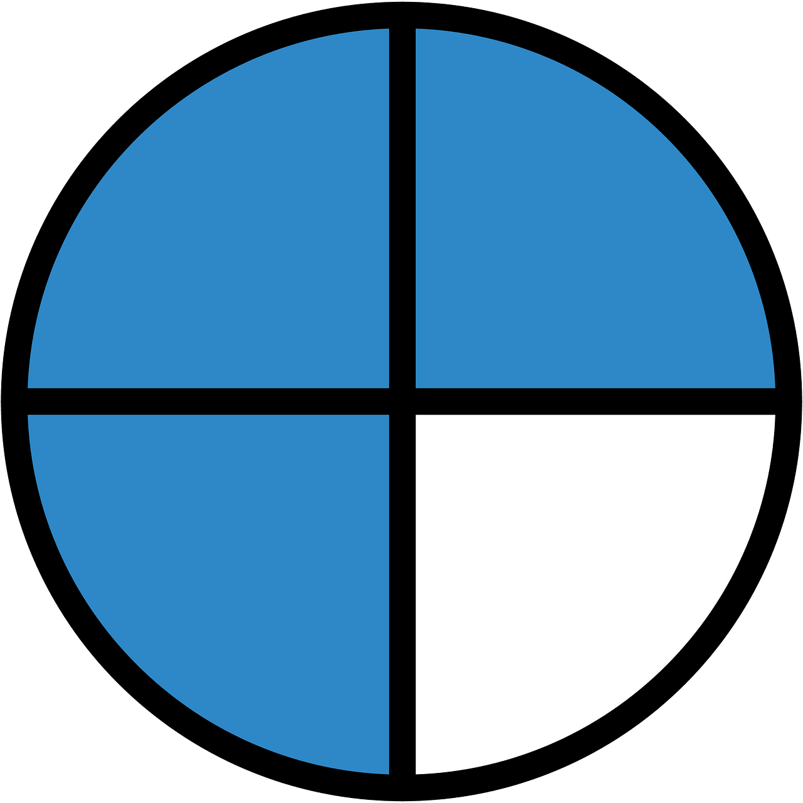

üìò ¬øQu√© es una fracci√≥n?
Una fracción representa una parte de un todo. Se compone de dos números separados por una línea:
Numerador (arriba): indica cuántas partes tomamos.
Denominador (abajo): indica en cuántas partes se divide el todo.
1
4
üçï Ejemplo visual
Si partes una pizza en 4 rebanadas y tomas 1, has comido 1/4 de la pizza.
üõ†Ô∏è ¬øD√≥nde usamos fracciones?
Las fracciones se utilizan en muchas situaciones cotidianas:
- üìè Medir longitudes o cantidades
- üç∞ Cocinar con recetas
- üìö Resolver problemas matemáticos
- ⚽ Dividir equipos o turnos